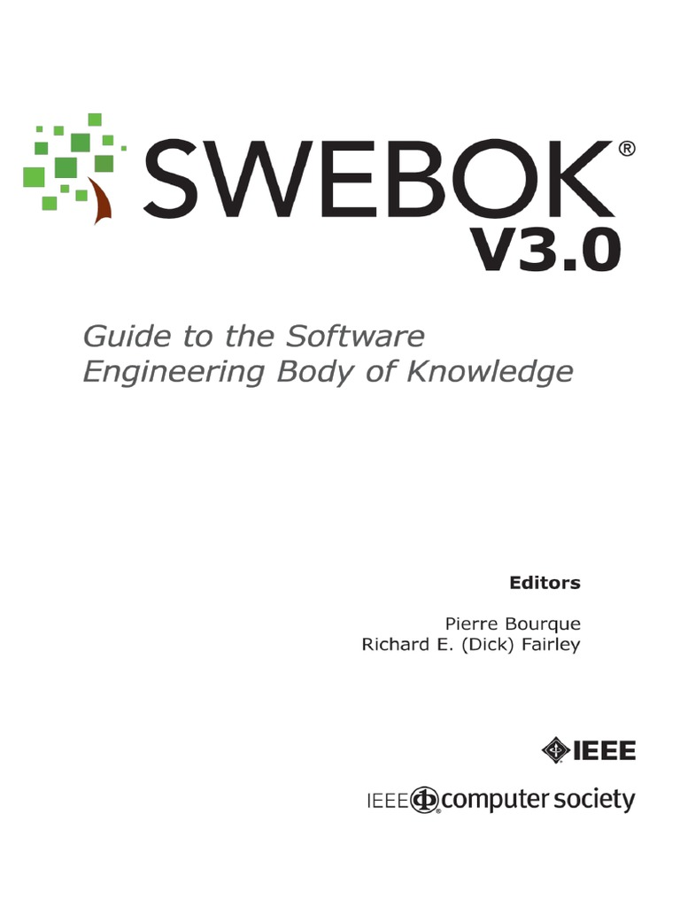
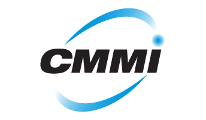
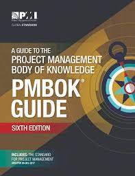

Estándar para los procesos de ciclo de vida del software de la organización, Este estándar se concibió para aquellos interesados en adquisición de software, así como desarrolladores y proveedores. El estándar indica una serie de procesos desde la recopilación de requisitos hasta la culminación del software.
El objetivo más importante de esta norma es proporcionar una estructura común para que los compradores, proveedores, desarrolladores, personal de mantenimiento, operadores, gestores y técnicos involucrados en el desarrollo de software utilicen un lenguaje en común.
Adquisición, Suministro, Desarrollo, Operación, Mantenimiento, Gestión de la configuración, Aseguramiento de calidad, Verificación, Validación.
EL Swebok (Software Engineering Body of Knowledge) fue elaborado por la IEEE en 1998, contiene los conocimientos de la ingeniería de software como las buenas practicas de desarrollo y acerca del software de calidad, de cómo debe llevarse a cabo por un ingeniero de software ya que esta dividida en 10 áreas diferentes que son:

Requisitos Software Diseño Pruebas Mantenimiento Gestión de la Configuración Software Gestión de la Ingeniería del Software Procesos Software Métodos y Herramientas en Ingeniería software Calidad Software
1. Promover mejor perspectiva de la ingeniería del software en el mundo.
2. Clarificar la situación y definir fronteras de la ingeniería del software con respecto a otras disciplinas como la informática, gestión de proyectos, ingeniería informática y matemáticas.
3. Determinar los contenidos de la ingeniería del software
4. Proporcionar el conocimiento de la ingeniería del software con temas de interés
5. Proporcionar una base para el desarrollo planes de estudio, certificaciones individuales y materiales para licencias
El modelo CMMI fue inicialmente desarrollado para los procesos relativos al desarrollo e implementación de Software por la Carnegie-Mellon University. Este vio la luz por primera vez en el año 1987 como Capability Maturity Model CMM. Dicho nombre, tanto como los cinco niveles de la representación por etapas, están inspirados en el modelo de madurez Manufacturing Maturity Model de Crosby. En principio el modelo CMM era aplicado en programas de defensa, pero lo cierto es que este ha logrado gran aceptación, tan es así que ha sido sometido a varias revisiones e iteraciones. Debido a su éxito se llevó a cabo el desarrollo de modelos CMM para para diversos ámbitos más allá del software.

Proporcionar un marco que ayude a la organización a mejorar sus procesos
Proporcionar una guía para mejorar la capacidad de desarrollar, adquirir y mantener productos o servicios proporcionados por una organización.
Describir un conjunto de buenas prácticas, tanto en gestión como en ingeniería.
Compromiso de la realización La capacidad de realización Las actividades realizadas Las mediciones y el análisis La verificación de la implementación
Instituto de Ingenieros Electricistas y Electrónicos, una asociación técnico-profesional mundial dedicada a la estandarización, entre otras cosas. Es la mayor asociación internacional sin ánimo de lucro formada por profesionales de las nuevas tecnologías, como ingenieros electricistas, ingenieros en electrónica, científicos de la computación, ingenieros en informática, ingenieros en biomédica, ingenieros en telecomunicación e ingenieros en mecatrónica.
La permanente actualización profesional en el campo de las ciencias electromagnéticas, de la electrotecnología y de la informática.
El desarrollo y la integración. Compartir y aplicar los avances en las tecnologías de la información, electrónica y ciencias en general.
Son las siglas de Project Management Body of Knowledge. Su título en castellano es Guía de los Fundamentos para la Gestión de Proyectos. Una guía desarrollada por el Project Management Institute (PMI) y que cada cierto tiempo (4, 5 años normalmente) se va actualizando con las nuevas tendencias y buenas prácticas en Gestión y Dirección de Proyectos. La guía PMBOK se encuentra ya por su sexta edición, que entró en vigor en 2018. PMBOK es la base para dos certificaciones profesionales a nivel internacional en el ámbito de la gestión de proyectos Certificación PMP (Project Management Professional). En el ámbito de la gestión de proyectos se trata de la certificación con mayor reconocimiento internacional. Una acreditación dirigida a directores/as de proyecto y profesionales con experiencia en las distintas áreas de gestión de un proyecto.

La finalidad de este conjunto es minimizar el riesgo de que un proyecto no alcance sus objetivos. El método o metodología para cada proyecto debe ser definido por cada organización de acuerdo a los diferentes intereses que tenga en materia de desarrollo de productos, servicios, estructura, misión y objetivos organizacionales.
Un proyecto intenta dar solución a un problema (cubrir una necesidad). Es temporal Es único en el tiempo y no repetible bajo las mismas circunstancias Conlleva incertidumbre Consume recursos: Tiempo, dinero, materiales y trabajo.